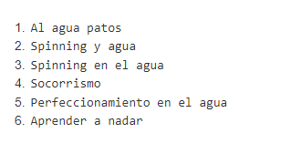
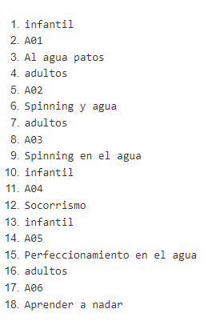

Dado el siguientes datos XPath online real-time tester, evaluator and generator for XML & HTML
(xpather.com) se pide realizar las siguientes consultas:
- Titulos de las Actividad
- Mostrar el codigo de la actividad, titulo y nivel
- El primer título de la actividad
- El último título de la actividad.
- Todos los elementos descendientes de las actividades infantiles
- El nombre de las actividades para adultos.
- El nombre de las actividades con dos sesiones semanales
- Número de actividades
- Si queremos convertir el resultado a cadena de caracteres, podemos usar la función string().
- Cuenta del número de actividades infantiles.
- Suma de las sesiones semanales de las actividades para adultos.
- Nodos de la actividad de código A06.
- Duración de las actividades con intensidad fuerte
- Mostrar el código de las actividades cuya duración coincide con la duración del 1º actividad.
- Título de las actividades del año 2018
/actividad/actividades/titulos/text()
Resultado
/actividades/actividad/codigo/text()|/actividades/actividad/titulo/text()|/actividades/actividad/@nivel
Resultado
Resultado
Resultado
Resultado
Resultado
Resultado
Resultado
Resultado
Resultado
Resultado
Resultado
Resultado
Resultado
Resultado